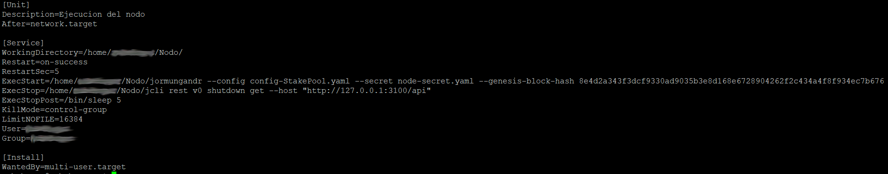

Jormungander con Systemd
Como hacer correr a jormungandr como un servicio del sistema bajo Systemd.
Systemd es un sistema para correr y gestionar servicios en Linux, en este manual aprenderás a convertir a jormungandr en un servicio del sistema esto te permitirá manejarlo con mayor facilidad e incluso poder arrancarlo automaticamente al inicio del sistema operativo.
Archivo de configuración
Se procede a crear un archivo de configuración para nuestro servicio, el que llamaremos "jormungandr.service" y lo guardaremos en la ruta "/etc/systemd/system/". Ejecutamos el editor de texto nano en modo administrador para poder crear un archivo en esa ruta.
sudo nano /etc/systemd/system/jormungandr.service
Recuerda usar el editor de texto de tu preferencia en modo root (administrador) o no podrás guardar los cambios hechos.
Una vez ejecutado el comando se abrirá la ventana del editor de texto. Aquí se deberá ingresar los siguientes parámetros.
[Unit]
Description=jormungandr
After=network.target
[Service]
WorkingDirectory=/ruta/donde/estan/los/archivos
Restart=on-success
RestartSec=5
ExecStart=/ruta/donde/estan/los/archivos/jormungandr --config config-StakePool.yaml --secret node-secret.yaml --genesis-block-hash 8e4d2a343f3dcf9330ad9035b3e8d168e6728904262f2c434a4f8f934ec7b676
ExecStop=/ruta/donde/estan/los/archivos/jcli rest v0 shutdown get --host "http://127.0.0.1:3100/api"
ExecStopPost=/bin/sleep 5
KillMode=control-group
LimitNOFILE=16384
User=tuusuario
Group=tuusuario
[Install]
WantedBy=multi-user.target
Procura poner la ruta donde se encuentran tus archivos.
En la parte del ExecStart, procura usar los nombres de tus archivos de configuración correspondiente para --config y --secret.
Debería verse algo asi como en la imagen
Los parámetros de importancia son explicados a continuación:
Description= Es el nombre para identificar tu nodo, lo cita cuando ejecutas el servicio o lo detienes.
WorkingDirectory= Corresponde a la ruta del directorio de trabajo que es la ruta de la carpeta donde tienes tus ejecutables "jormundanr" y "jcli".
ExecStart= Aquí es donde se introduce el comando de ejecución de inicio del servicio, debe ir el archivo que se ejecutara (incluida su ruta) y su parametros de ejecución por ejemplo se requiere ejecutar el jormungandr, que está en la carpeta "Nodo" del usuario "cardano" esta línea quedaría así:
ExecStart=/home/cardano/Nodo/jormungandr --config config-StakePool.yaml --secret node-secret.yaml --genesis-block-hash 8e4d2a343f3dcf9330ad9035b3e8d168e6728904262f2c434a4f8f934ec7b676
Todo debe estar en una sola línea, un salto de línea (ENTER) entre estos parámetros generara un error.
ExecStop= Igual que en el ExecStart, solo que aquí se introduce el comando de ejecución que se usara para la detención del servicio, desde el manual oficial se sugiere usar el comando "jcli rest v0 shutdown get --host "http://127.0.0.1:3100/api" para detener el nodo y es el que se usara en esta configuración. Siguiendo el ejemplo anterior del usuario y carpeta, nuestra línea quedaría así:
ExecStop=/home/cardano/Nodo/jcli rest v0 shutdown get --host "http://127.0.0.1:3100/api"
ExecStopPost=Este comando se ejecuta después del ExecStop y se usara para dar un tiempo de espera al nodo y así pueda realizar su proceso de detención correctamente. En esta configuración se dejaron 5 segundos de espera, nuestra línea quedaría así:
ExecStopPost=/bin/sleep 5
KillMode= Aquí se selecciona el modo en que se detendrá el servicio se usa por defecto "control-group" el que una vez detenido el servicio (después de haber ejecutado el ExecStop y ExecStopPost) cerrará a la fuerza los procesos abiertos restantes.
LimitNOFILE= Una configuración muy importante, tiene relación con la cantidad de archivos(procesos) que puede gestionar el servicio y evitar el tan famoso "too many open files”, esta configuración se aplica únicamente al servicio y es independiente de la configuración general del sistema, se usa el valor "16384" el cual no me ha dado problemas.
User y Group= Estos dos parámetros sirven para determinar bajo que permisos se ejecutara el servicio, si no se pone un User y un Group por defecto se ejecutara en modo administrador, para nuestra seguridad en esta configuración se ejecutara el jormungandr sin modo root, ya que no es necesario y podría generar algún hueco de seguridad. Así en estos dos debemos indicar que se ejecutaran en nuestro usuario que no tiene permisos root, siguiendo el ejemplo del usuario anterior, donde tenemos un usuario llamado "cardano" estas dos líneas quedaran así:
User=cardano
Group=cardano
Al ejecutar el comando "ls -la" (sin comillas) en tu terminal podrás ver las propiedades y permisos de tus carpetas y tus archivos de la ruta que te encuentres. Puedes ver en tu carpeta donde tienes tu jormungandr en que permiso de usuario y grupo estas.
Una vez ingresado correctamente tus parámetros de configuración, procede a guardar tus cambios del archivo "jormungandr.service".
En nano para guardar una modificación se usa la combinación de teclas "CTRL+o" y luego confirmas con un "ENTER”, para salir se usa "CTRL+x".
Ejecutando el servicio
Una vez guardado los cambios de nuestro archivo de configuración estamos listos para ejecutar nuestro servicio, recuerda ejecutar siempre en modo administrador los comandos de a continuación, en ubuntu por ejemplo se antepone un sudo para ejecutar algo en modo administrador.
Iniciar el servicio
sudo systemctl start jormungandr
Ten en cuenta que al iniciar el servicio, estas iniciando el jormungandr.
Podemos ver el estado del servicio con el siguiente comando:
Estado del servicio
sudo systemctl status jormungandr
Cuando la pantalla no es suficiente grande para mostrar todo, este queda mostrando parte de su contenido que puedes explorar moviendo las teclas, si deseas salir de esa pantalla debes apretar la tecla q .
Si se desea parar el servicio, se usa el siguente:
Detener el servicio
sudo systemctl stop jormungandr
Ten en cuenta que al detener el servicio, estas deteniendo el jormungandr.
Una vez que vemos que todo funciona bien, si se desea, podemos hacer que el servicio se ejecute cada vez que se inicie el sistema, esto se hace con:
sudo systemctl enable jormungandr
Si se desea deshabilitar el servicio al inicio del sistema se usa:
sudo systemctl disable jormungandr
Situaciones de uso:
Por ejemplo, para cambiar los binarios del jormungandr por una nueva version, solo deberas detener el nodo con un.
sudo systemctl stop jormungandr
Luego reemplazar por los nuevos binarios y despues volver a iniciar el nodo.
sudo systemctl start jormungandr
Como vez es mucho mas sencillo.
y eso seria todo .
Si deseas apoyarme para seguir creando más contenido en español, puedes hacerlo delegando en mi Pool.